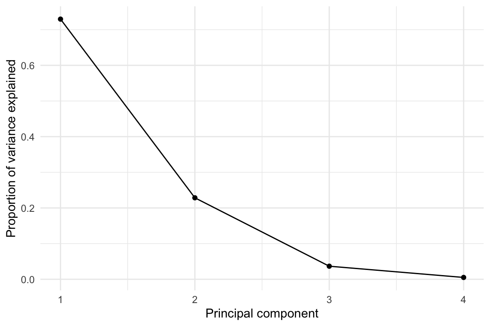

PCA, MANOVA, and the geometry of multivariate comparison
Understanding variability beyond univariate thinking
multivariate statistics
Multivariate analysis is often introduced as a technical upgrade to univariate testing: more variables, more sophisticated statistics, more powerful conclusions. In practice, however, its real value lies elsewhere. Multivariate methods force us to think geometrically, shifting attention from individual variables to configurations, from isolated effects to structured variability. In this post, Principal Component Analysis (PCA) and Multivariate Analysis of Variance (MANOVA) are discussed in their concerted action on the popular iris dataset.
💾 Prefer reading offline? You can download a PDF version of this post for printing or future reference.
Why multivariate thinking is important
In many experimental settings, statistical analysis still proceeds one response variable (outcome) at a time. Group differences are assessed through a sequence of tests applied to single outcomes, implicitly assuming that each carries independent and self-contained information. This approach is widely regarded as inadequate when variables are numerous and correlated, as is often the case in empirical data drawn from natural, social, or cultural processes.
Multivariate statistics addresses this limitation by shifting the focus from individual outcomes to configurations of outcomes. Rather than asking whether a single response differs across groups, the central question becomes whether groups occupy distinct regions of a multidimensional space, and how such separation relates to the variability observed within each group.
From this perspective, multivariate methods are less about hypothesis testing in the narrow sense, and more about geometry. Concepts such as centroids, dispersion, and variance–covariance structure characterize the data before any formal test is performed. Understanding what a given method assesses therefore requires understanding the space in which the data are represented.
This post focuses on one widely used approach to multivariate group comparison: Multivariate Analysis of Variance (MANOVA). The aim here is to clarify what the method actually measures, under which conditions it is informative, and how it can be used responsibly in exploratory analyses, either directly or after Principal Component Analysis (PCA).
A pedagogical example for multivariate reasoning
To ground the discussion, it is useful to start from a simple and well-understood example. The iris dataset is a canonical choice in this respect, not because it is representative of real-world complexity, but because it allows key geometric ideas to be illustrated without unnecessary distractions.
The dataset consists of 150 observations from three biological species (Iris setosa, Iris versicolor, Iris virginica). Each observation is described by four continuous measurements: sepal length, sepal width, petal length, and petal width.
While iris is often used to demonstrate classification performance, it serves a different purpose here: providing a controlled environment in which the relationship between data representation, group separation, and variability can be examined explicitly.
Principal component analysis as a geometric transformation
Principal component analysis (PCA) is often introduced as a dimensionality reduction technique. While this description is not incorrect, it can be misleading if taken at face value. Conceptually, PCA is best understood as a change of coordinates: the original variables are replaced by a new set of orthogonal axes that capture maximal variance.
In the context of multivariate group comparison, PCA can play a crucial preparatory role. By projecting the data into a lower-dimensional space that preserves most of the variance, it becomes easier to visualize group structure and to reason about distances and dispersion.
Importantly, PCA does not create separation between groups. Any apparent separation observed in principal component space reflects structure already present in the data. PCA merely provides a coordinate system in which that structure can be more easily inspected.
What PCA actually does
In R, principal component analysis is commonly performed using the function prcomp() from the stats package. While its usage is straightforward, it is worth recalling what this function implicitly assumes about the data and how its output should be interpreted.
First, prcomp() operates on a numeric matrix and expects variables to be measured on a comparable scale. When variables differ substantially in variance or units, centering and scaling are usually required. In the examples discussed here, variables are centered and scaled prior to PCA in order to prevent components from being dominated by features with larger numerical ranges.
Second, prcomp() performs a singular value decomposition of the centered (and optionally scaled) data matrix. No distributional assumptions are made at this stage: PCA is a purely geometric transformation. Normality, when invoked later, concerns the distribution of component scores rather than the original variables.
The output of prcomp() consists of two complementary objects: scores and loadings. These play distinct roles and are often conflated in applied work.
Scores and loadings: two sides of the same transformation
Principal component scores represent the projection of observations onto the new coordinate system defined by the principal components. They locate each observation in principal component space and are the quantities used for visualization, clustering, and group comparison.
Principal component loadings, by contrast, describe how the original variables contribute to each component. They define the orientation of the new axes with respect to the original feature space.
In multivariate group comparisons, scores are the primary objects of interest, as they encode the relative positions of observations. Loadings become relevant at a later stage, when the goal is to interpret the components in terms of the original variables.
Throughout this post, scatterplots of principal components refer to plots of component scores. Such plots visualize the relative positions of observations in reduced-dimensional space and should not be interpreted as representations of variable contributions, which are instead encoded in the loadings.
A first look at principal component space
As shown in Figure 1, the three species occupy partially overlapping yet distinct regions of principal component space.
Explained variance and dimensionality
Principal components are ordered by decreasing variance. Reporting the proportion of variance explained is useful to justify why a low-dimensional projection (typically the first two components) is an informative geometric summary.
In this example, the first two components capture a substantial fraction of total variability, supporting their use for visualization and for subsequent multivariate comparisons in component space.
Table 1 reports the proportion of variance explained by each component.
| Component | Proportion of variance explained | Cumulative |
|---|---|---|
| PC1 | 0.730 | 0.730 |
| PC2 | 0.229 | 0.958 |
| PC3 | 0.037 | 0.995 |
| PC4 | 0.005 | 1.000 |
The scree plot in Figure 2 provides an alternative view of the information reported in Table 1.

From PCA to multivariate group comparison
Once the data have been projected into a low-dimensional principal component space, the next step is to assess whether groups differ in a multivariate sense. At this stage, the relevant question is no longer whether individual components differ across groups, but whether group centroids are separated relative to the variability observed within each group. This is where the MANOVA framework naturally fits in.
However, before considering MANOVA in principal component space, it is useful to recall the conventional formulation of the method, as it is typically introduced in applied tutorials.
MANOVA: assumptions, scope, and interpretation
Multivariate Analysis of Variance (MANOVA) extends the logic of univariate ANOVA to situations in which each observational unit is described by multiple response variables. Rather than testing group differences on individual outcomes one at a time, MANOVA evaluates whether groups differ in their multivariate location, taking into account the joint distribution of the responses.
What MANOVA actually tests
At its core, MANOVA addresses a geometric question. Groups are represented by centroids in a multidimensional response space, and the method assesses whether these centroids are separated relative to the variability observed within groups.
A common point of confusion arises when deciding whether a full multivariate procedure is necessary. One might reasonably ask why MANOVA should be preferred to a sequence of univariate ANOVAs, or to a single ANOVA applied to a composite or summary measure. The key distinction is that MANOVA explicitly incorporates the covariance structure among response variables. By doing so, it tests for patterns of group separation that may only emerge when variables are considered jointly, and that cannot be recovered from marginal analyses alone.
MANOVA versus univariate ANOVA
The distinction between MANOVA and univariate ANOVA is not merely technical, but conceptual. Univariate ANOVA evaluates group differences along a single response dimension at a time. Even when applied repeatedly to multiple outcomes, each test remains blind to the relationships among variables.
From a geometric standpoint, univariate ANOVA assesses separation along one predefined direction in response space. Each outcome defines its own axis, and group differences are evaluated independently along those axes. This approach implicitly assumes that relevant group structure can be detected through marginal comparisons, and that correlations among responses are either negligible or irrelevant.
MANOVA, by contrast, retains a genuinely multivariate perspective. Rather than focusing on individual response dimensions, it evaluates separation in the subspace jointly defined by the responses. Group differences are therefore allowed to emerge along arbitrary linear combinations of variables, not restricted to the original coordinate axes.
This distinction becomes especially important when group separation is not aligned with any single response variable. In such cases, marginal tests may fail to detect meaningful structure, even when groups are clearly separated in multivariate space. MANOVA is specifically designed to capture these patterns, as it evaluates differences in location relative to the joint covariance structure of the responses.
Assumptions and their practical role
Like all parametric methods, MANOVA relies on a set of assumptions concerning the distributional and structural properties of the data. These include multivariate normality of the response variables within groups, homogeneity of covariance matrices across groups, and independence of observations.
In practice, these assumptions are rarely met exactly. Their relevance therefore depends on the role assigned to the analysis. When MANOVA is used as a formal inferential procedure, substantial violations may compromise the validity of \(p\)-values and associated significance tests. In applied and exploratory settings, however, MANOVA is often employed as a descriptive and comparative tool, aimed at quantifying multivariate separation rather than at establishing strict inferential claims.
From this perspective, assumptions function less as rigid prerequisites and more as diagnostics guiding interpretation. Departures from multivariate normality or covariance homogeneity do not automatically invalidate the analysis, but they do affect how results should be read and reported. Emphasis shifts from binary decisions based on \(p\)-values to the magnitude and structure of multivariate separation.
Choice of test statistics
Several test statistics are available within the MANOVA framework, including Wilks’ lambda, Pillai’s trace, the Hotelling–Lawley trace, and Roy’s largest root. Although these statistics are asymptotically equivalent under ideal conditions, they differ in their sensitivity to assumption violations and to specific patterns of group separation.
Wilks’ lambda is perhaps the most widely reported statistic, but it is also among the most sensitive to departures from multivariate normality and to heterogeneity of covariance matrices. Roy’s largest root, by contrast, focuses exclusively on the strongest direction of separation and may overemphasize a single dominant effect.
Pillai’s trace is often recommended in applied and exploratory settings because of its relative robustness to violations of assumptions, particularly when group sizes are unequal or covariance matrices differ across groups. Rather than concentrating on a single dimension of separation, Pillai’s trace aggregates evidence across all response dimensions, providing a more stable summary of multivariate effects.
For this reason, when MANOVA is used primarily as a descriptive tool for assessing multivariate separation, emphasis should be placed on the overall pattern of results rather than on any single test statistic taken in isolation. Reporting Pillai’s trace alongside a clear description of the analytical context helps balance robustness and interpretability.
Post hoc analyses and interpretation
When a MANOVA indicates evidence of multivariate group separation, post hoc analyses are often performed to aid interpretation. These analyses typically involve examining group differences on individual response variables or on selected dimensions derived from the multivariate space.
It is important to emphasize that post hoc tests following MANOVA do not constitute independent confirmations of group differences. Rather, they serve an explanatory role, helping to identify which dimensions of the response space contribute most strongly to the observed multivariate separation.
In this sense, post hoc analyses should be interpreted descriptively rather than inferentially. Their purpose is not to re-test hypotheses already addressed by the multivariate procedure, but to provide insight into the structure of the effect detected at the multivariate level.
When MANOVA is applied in exploratory settings, post hoc results are therefore best viewed as complementary summaries that facilitate interpretation, visualization, and substantive discussion. Used in this way, they enrich the multivariate analysis without overstating the evidential weight of individual comparisons.
A conventional MANOVA workflow
Applied tutorials often present MANOVA through a standard sequence of steps:
(i) fit an omnibus MANOVA model on the original variables (without PCA),
(ii) inspect assumptions diagnostically,
(iii) report a multivariate test statistic (often including Pillai’s trace), and
(iv) use follow-up analyses primarily for interpretation.
A well-known reference implementation of this workflow, based on the iris dataset and using the package rstatix, is provided by Datanovia. The goal here is not to reproduce that tutorial, but to summarize the logic of the pipeline in a compact and reusable form.
Table 2 summarizes the assumptions typically discussed in rstatix-style MANOVA workflows, together with their practical role in applied analyses. Here, n denotes the number of observations per group, and p the number of response variables.
| Aspect assessed | Typical diagnostic | Common tool | Practical interpretation |
|---|---|---|---|
| Sample size | Check that n > p per group | — | Small samples limit stability |
| Independence | Study design | — | Violations invalidate inference |
| Outliers | Distance-based inspection | identify_outliers() (rstatix) |
Inspect, do not auto-remove |
| Normality | Marginal / multivariate tests | shapiro_test(), mshapiro_test() (rstatix) |
Moderate deviations often tolerable |
| Multicollinearity | Correlation inspection | cor_test() (rstatix) |
Very high correlations problematic |
| Linearity | Pairwise scatterplots | GGally::ggpairs() |
Strong nonlinearities affect geometry |
| Covariance homogeneity | Box’s M test | box_m() (rstatix) |
Highly sensitive; interpret cautiously |
In line with the Datanovia example, the iris dataset shows no major pathologies with respect to most diagnostic checks. In particular, sample size, independence, normality, and linearity assumptions are reasonably satisfied. As is often the case in practice, the only notable deviation concerns homogeneity of variance–covariance matrices, a common situation in applied settings and one that reinforces the use of robust multivariate statistics such as Pillai’s trace.
Back to principal component space
The discussion above treated MANOVA in its conventional formulation, applied directly to the original response variables. This clarifies what MANOVA tests and how multivariate separation is quantified.
In many applied settings, however, the original variables are numerous, correlated, or difficult to interpret individually. In such cases, it is often advantageous to work in a reduced-dimensional representation that preserves the main geometric structure of the data while simplifying interpretation. Principal component analysis re-enters here as a representational step.
A natural question arises at this point: should MANOVA-style diagnostics have been assessed already when PCA was performed?
The answer is largely negative. PCA, as implemented by prcomp(), is a purely geometric transformation based on a singular value decomposition of the data matrix. It does not rely on distributional assumptions, nor does it require normality, homogeneity of variances, or independence across groups.
For these reasons, diagnostic checks discussed in MANOVA workflows are appropriately revisited after projection into principal component space, when the scores are treated as inputs to a multivariate comparison. By reducing p (the number of response variables) to a small set of informative principal components, this choice ensures a more favorable n/p ratio, thereby enhancing stability and interpretability.
MANOVA in principal component space
With the conceptual and methodological groundwork in place, the combination of PCA and MANOVA can now be operationalized. In this setting, PCA defines a low-dimensional space that captures the dominant structure of the data. MANOVA is then applied to the corresponding component scores to quantify group separation within that space.
Operationally, this amounts to replacing the original response variables with a selected subset of principal component scores. These scores serve as multivariate responses in the MANOVA model, while group membership remains unchanged. The logic of the test is identical to that of a conventional MANOVA; what changes is the space in which multivariate separation is assessed.
This approach offers several practical advantages. By working with a reduced number of orthogonal components, the dimensionality of the response space is controlled explicitly, multicollinearity is eliminated by construction, and the ratio between the number of observations and response variables is improved. At the same time, because principal components are ordered by explained variance, the analysis can be restricted to those dimensions that capture the most informative aspects of the data.
In what follows, this procedure is illustrated on the iris dataset by applying MANOVA to the first two principal component scores. This example is not intended to optimize classification or prediction, but to demonstrate how multivariate separation can be measured and interpreted once the data have been embedded in principal component space.
Choosing the number of principal components
Applying MANOVA in principal component space requires an explicit decision about how many components to retain. This choice is not dictated by the MANOVA framework itself, but by considerations of representation and interpretability.
In practice, the goal is not to preserve all variability in the data, but to retain those dimensions that capture the dominant structure relevant for group comparison. Components explaining only a negligible fraction of total variance are unlikely to contribute meaningfully to multivariate separation, while still increasing the dimensionality of the response space.
A common and pragmatic strategy is therefore to restrict the analysis to the first few principal components, guided by explained variance and by visual inspection. In the iris dataset, the first two components account for the vast majority of total variability and already provide a clear geometric representation of group structure.
For this reason, the analysis below focuses on the first two principal component scores. This keeps the response space low-dimensional, improves the n/p ratio, and allows multivariate separation to be interpreted directly in relation to the score plot.
Model fitting to the iris dataset
In the iris example, the first two principal components already account for the vast majority of total variance and therefore provide a compact yet informative representation of the data geometry.
The MANOVA fitted above tests whether species centroids differ in the two-dimensional space defined by PC1 and PC2, relative to the dispersion observed within each species. The result, reported in Table 3, shows a highly significant multivariate effect according to Pillai’s trace.
| Effect | Df | Pillai | approx F | num Df | den Df | Pr(>F) |
|---|---|---|---|---|---|---|
| Species | 2 | 1.1 | 89.894 | 4 | 294 | 0 |
| Residuals | 147 |
| Effect | Df | Pillai | approx F | num Df | den Df | Pr(>F) |
|---|---|---|---|---|---|---|
| Species | 2 | 1.192 | 53.466 | 8 | 290 | 0 |
| Residuals | 147 |
It is instructive to compare the PCA-based MANOVA result with the conventional MANOVA fitted directly on the original iris measurements (Table 4).
Importantly, both analyses rely on the same underlying statistical machinery: in both cases, the model is fitted using the function manova(). What differs is not the test itself, but the geometry of the response space on which the test is applied.
In the conventional formulation, separation is assessed in the original four-dimensional measurement space. In the PCA-based formulation, the same separation is evaluated in a two-dimensional space that preserves the dominant structure of the data. The fact that both approaches yield a strong and consistent multivariate effect supports the interpretation of PCA-based MANOVA as a faithful low-dimensional representation of multivariate group separation.
Interpreting multivariate separation in principal component space
The omnibus MANOVA result establishes that the three species occupy distinct regions of the two-dimensional principal component space. To interpret this separation, it is useful to examine how individual components and groups contribute to the observed multivariate effect.
Contribution of individual principal components
Although MANOVA evaluates separation jointly across all response dimensions, separation in principal component space may be driven unevenly by different components. To make this explicit, univariate ANOVAs can be applied to the individual component scores (Table 5 and Table 6). These analyses are not used as independent hypothesis tests, but as descriptive tools that help locate multivariate separation within the score space.
| Df | Sum Sq | Mean Sq | F value | Pr(>F) | |
|---|---|---|---|---|---|
| Species | 2 | 406.424 | 203.212 | 1050.631 | 0 |
| Residuals | 147 | 28.433 | 0.193 |
| Df | Sum Sq | Mean Sq | F value | Pr(>F) | |
|---|---|---|---|---|---|
| Species | 2 | 22.569 | 11.285 | 14.6 | 0 |
| Residuals | 147 | 113.621 | 0.773 |
As expected from the geometry of the score plot in Figure 1, separation along the first principal component accounts for a substantial portion of the group differences. The second component, while explaining a smaller fraction of total variance, contributes to separating versicolor and virginica, illustrating that dimensions with lower variance can still play a meaningful role in discrimination.
Which groups drive multivariate separation?
Further insight can be gained by examining the relative positions of group centroids in principal component space (Table 7).
| Species | PC1 | PC2 |
|---|---|---|
| setosa | -2.217 | -0.288 |
| versicolor | 0.495 | 0.548 |
| virginica | 1.723 | -0.260 |
Loadings versus discrimination
A natural question at this stage is whether principal component loadings could be used to assess “what matters” for group separation. Loadings, however, describe how the original variables contribute to defining each principal axis. They do not quantify how strongly groups differ along that axis.
In other words, loadings quantify variance, not discrimination. To measure how important a given component is for group separation, one must examine the distribution of scores across groups.
To illustrate this point in the simplest possible setting, consider PC1 alone. Once attention is restricted to a single component, the multivariate problem reduces to a univariate one, where effect sizes such as \(\eta^2\), summarize how much variance in PC1 is explained by group membership.
Finally, univariate \(\eta^2\) values quantify how strongly each raw variable is associated with group membership when considered in isolation (Table 8). These values are not additive and should not be normalized into a decomposition of multivariate separation, but they provide a useful descriptive ranking of marginal discriminatory strength.
| variable | η² |
|---|---|
| Petal length | 0.94 |
| Petal width | 0.93 |
| Sepal length | 0.62 |
| Sepal width | 0.40 |
Conclusions
This post argued that PCA and MANOVA address complementary stages of the same analytical problem. PCA defines a low-dimensional geometric representation in which multivariate structure becomes visible, while MANOVA quantifies group separation by comparing between-group and within-group variability within that space.
Using the iris dataset as a pedagogical example, the analysis showed that applying MANOVA in principal component space does not alter the underlying statistical machinery—the model is still fitted via manova()—but changes the geometry on which separation is assessed. In this sense, PCA-based MANOVA should not be viewed as a different test, but as the same test applied to a different, and often more interpretable, representation of the data. Seen in this light, PCA and MANOVA are best understood not as a sequence of techniques, but as complementary tools for reasoning geometrically about multivariate structure.
A central conceptual distinction was emphasized throughout: principal component loadings explain variance, whereas group discrimination must be assessed on the distribution of scores across groups. Confusing these two roles leads to common misinterpretations, particularly when PCA is used as a preparatory step for group comparison.
More broadly, the discussion highlighted the value of multivariate methods as tools for geometric reasoning rather than as mere extensions of univariate testing. By shifting attention from individual variables to configurations, centroids, and dispersion, PCA and MANOVA encourage a more structural understanding of group differences.
A natural next step is to revisit the same geometric questions using distance-based approaches, leading to Permutational MANOVA (PERMANOVA). This extension replaces model-based assumptions with permutation-based inference, offering a complementary perspective on multivariate separation that can be explored in a follow-up post.